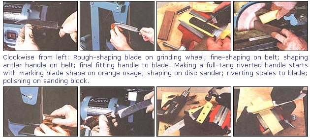
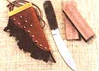
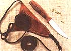
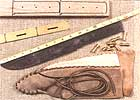
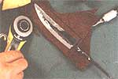
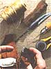
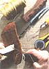
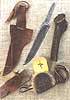

Design And Make A Homesteader's Knife
Constructing a bone handled knife, including shaping, instructions, diagrams, heat treating, polishing, sharpening.
by John Vivian.
April/May 1996
COUNTRY SKILLS
First Lessons in the Old-Time Cutler's Trade
A minor but sudden and distant family emergency had me rushing toward a boarding gate at Boston's Logan Airport, a few essentials hurriedly thrown into a suitcase, and still wearing old jeans, field boots, and Levi's jacket. I emptied my pockets on the conveyor beside the metal detector and walked through the arch without setting off any alarm that I could hear. But suddenly I found myself surrounded by uniformed cops with little radio-phone-plugs in one ear. Feeling like a perplexed Harrison Ford falsely accused in a movie mystery, I had to produce ticket, boarding pass, IDs and all before learning that I was suspected of trying to board a civil aircraft carrying a lethal weapon.
"Lethal weapon?" I said. "You mean the knife?" My pocketknife was sitting beside keys, loose change, and assorted country-pocket junk on the conveyer.
A cop reached for the knife with a latex-gloved hand and nodded grimly.
But "I...I live ...in the country" was all I could say. I showed them my hands with their assorted scars, a couple of finger-ends lopped off by farm machinery, and purple urchin spines under the skin from when I skin-dived after conch and rock lobster in the Caribbean. "Its not a weapon;" I said. "Its a tool. I use it to do everything;" and I started describing how I'd been splicing up a rope halter and lead for my daughter's new pony when called away.
Fortunately, one cop had been raised on a Connecticut truck farm and another's grandfather was a retired fisherman out of Newport, Rhode Island. Both understood how essential a knife is in life outside the city limits. So I was shortly on my way in time to make the flight ...knife back in my pocket.
The culprit, a wood-handled folding jackknife, wasn't one of those spring opening switchblades that have been illegal since their appearance in the West SideStory gang-fighting scene back in the 1950s. It doesn't even have a straight slicing edge or a sticking point but combines a blunt-ended marlin spike with a broad, down-hooking seaman's "hawk-bill" blade used to splice ropes-and to free a mariner from tangled cordage in an emergency aboard an old-time sailing ship. It is about as harmless as an edged tool can be-plus, both blade and spike are well under the six-inch maximum length that can be carried under the laws of most states.
"Don't flash it at the stewardess" was the advice from one of the officers as I headed for the plane.
No Place
for Knives
Like big dogs, full-size pickup trucks, and other ordinaries of life out beyond the sidewalks, real knives are out of place anywhere in a big city but a butcher shop or upscale cutlery showroom. Recent events in Los Angeles have given all knives an undeserved bad image, and I've heard that athletic males rushing through airports are particularly suspect of misusing them.
But not a blade I own was designed, intended, or ever used as a weapon-even for self-defense. But in the day-to-day routine of self-sufficient country living, edged blades are almost as essential today as they were back when ships were powered by the wind, plows and wagons were pulled by horses, and before food came ready-tonuke-'n'-serve off grocery shelves. Not that you or I find ourselves cutting
free of
storm-downed rigging, splicing a lasso, or fending off bears all that often. But once "nerve-shaken and over-civilized," as John
Muir characterized city people, we have traded the rat race for a more elemental life close to nature and the land, and that doesn't come ready-cut to spoon size.
Every country woman, man, and near grown kid needs a good knife. The trouble is that most modern mass produced carry knives are more for show than use-all shiny and loaded with good selling but useless features like gut hooks that would only snag on real gut, serrated "saw" backs that wouldn't cut a twig, and handles of endangered ebony or rosewood that you wouldn't dare scratch or expose to rain, and with blades shaped to please the eye rather than the hand, made of stainless steel that won't tarnish but won't resharpen readily either.
They belong in a display case rather than on your belt out in the woods. The best way 'l know to get a knife that fits your brand of country living is to design and make your own, using time-proven materials and based on patterns harking back to the pioneer days when folks lived by the rifle, ax, and blade-hunting and butchering game, felling and notching cabin logs, and fending off worse hazards than honey-seeking black bears.
DESIGN OPTIONS
Making Knives
I won't presume to present the techniques of modern high-art knife makers who use sophisticated materials and equipment to make knives of unmatched beauty, durability (and cost).
I'll stick to the coal-fueled, hammer-forged methods of the American country blacksmith/cutler and to basic seventeenth- and eighteenth-century blade designs you still see today in the hardworking cutlery used by butchers and chefs, fishermen and seafood processors, trappers, fur and leather workers. I'll show how you can buy or forge a rough knife blank of honest carbon steel, then refine and finish it, fit a custom-shaped handle of warm and friendly bone or wood, and make a simple belt sheath or a back or neck pouch of pelt or hide to carry it in.
There are three levels of difficulty you can choose from. For a first knife,
you
can buy a $10-$80 kit (average cost about $25 ) that needs only to have a preformed handle attached to a finished blade and a precut, pre-punched sheath fastened with leather thongs ...but there's no law against modifying its shape, temper, or finish to suit yourself.
For more challenge, you may want to grind and polish a $12 rough knife blank and shape a handle from a rough wood block or elk antler costing two dollars and up and fasten it on with a few cents worth of rivets. And for purists or pure entertainment, I will describe the basics of making a knife from scratch-showing how to forge and harden a blade from recycled saw steel or an old prybar or auto spring (bought at a pennies-per-pound scrap-metal price) using a homemade oven of stacked fire brick heated by inexpensive propane soldering torches.
I'll show how to heat and harden a blade in the oven, shape it on a small anvil, temper it (in the kitchen oven, believe it or not), then affix several styles of handle, polish it all to as fine a finish as you like, and finally, sharpen the edges fine enough to shave with. Everything can be done using hand and power tools that should be in every farmstead workshop.
First Things First
Before getting to even the first preliminary stage in working metal, let me insist that you get a face shield, safety glasses, or shatterproof lenses for your prescription glasses. Leather gloves and apron and steel toed shoes are more than desirable for working with hot metal, but eye protection is essential. A single tiny splinter of steel flung off a grinder or belt-sander can lose you an eye.
Don't tempt fate. After buying safety glasses, get a little $1 horseshoe magnet and take it shopping for knife steel at the scrap yard. If the magnet adheres to a chunk of rusty metal, you know it contains iron. Rust-free metal (if unpainted and exposed to weather) will be nonferrous or perhaps wrought iron, the traditional blacksmith's metal, that does not make a good knife unless you regress to pre-1850s technology and weld a steel edge on a wrought-iron spine.
If magnet-attracting metal makes a ringing sound when held loosely and struck, it is steel; cast iron and mild steel (a form of iron really, that won't harden or hold an edge) will go "Munk" no matter how you try to make it sing. Steel will bend before breaking; cast iron fractures, showing a grainy broken end; if bent to breaking, wrought iron looks to be a cable of metal wires. To determine carbon content and knife suitability of a mystery steel sample, compare sparks made on a grindstone or by a scratch/dent test. Touch the tang of any file to any moving abrasive.
Files are made from hardened high-carbon steel that is mediocre for knives, but that will make a great shower of hot sparks. The broken end of a stainless steel kitchen knife, a dark stained medium-carbon or semi-stainless pen knife, or a rusty scythe or mower blade will produce a dandy spark shower, but smaller and less spectacular than the file.
Mild steel from a common nail or an old license plate will make fewer, duller sparks. Stainless is too hard and finicky to handwork into a knife, so pick medium-carbon tool steel that sparks and rusts or stains like the pen knife.
To scratch-test, grind a patch so it is free of rust or factory varnish on a variety of steel samples and see which will scratch which. The license plate stamped out of soft, low-carbon steel will show the most marks. The medium-carbon knife will scratch the mild steel but not the file. The hard high-carbon file won't be scratched at all. Pick a knife steel that grooves the plate but doesn't phase the file.
Shaping
If you want to shape your own blade the traditional way, you must heat steel to a malleable 1500 degrees Fahrenheit in a coal-burning forge, then pound it to shape with a 4-pound blacksmith's hammer on a 500-pound anvil. A major undertaking ...but your raw stock can be any size or thickness. You can cut hot steel over a hardie or with a chisel, or draw it out to be thinner and wider, upset it to be thicker and shorter-and generally treat it like thick (and extremely hot) putty.
In drawing a knife from a length of flat steel, it will tend to curve into a cone as it widens along the sharp edge, so before starting to draw the edge, the smith imparts a reverse curve to the steel. Only hands-and-eyes-on instruction (now available on video) and experience can teach such skills.
It may not be as satisfying, but it is a lot quicker to locate a piece of medium carbon steel that is already the approximate length, width, and thickness of your blade-to-be and grind it to shape. You can make an ax from inch-thick flat steel cut from a blade or bucket off an old 'dozer or loader. You can make a good cleaver from a 1/2" or 3/8 truck-size leaf spring. Quarter inch stock from a lighter auto spring is best for large, heavy hunting blades. Use thinner spring steel or a piece of saw blade 3/16", or 1/8" thick for smaller blades. Avoid old files, hacksaw blades, springs-that are too high-carbon and brittle. Similarly, avoid ductile but low carbon steel as found in auto engine or front end castings.
Pro knife makers use an oxyacetylene torch to cut steel, but flame-cutting metal can be dangerous in unskilled hands. Plus, torch and hose, tips, regulators, and gauges cost $150-gas is extra. You should really have formal instruction to cut steel safely with a torch, and I at least would need a better reason than a few knives to invest in the equipment. Better for the occasional knife maker is to soften hardened and tempered tool steel by heat-soaking it overnight-or till a polished surface turns a light straw color-in your kitchen oven set at 350 degrees. Cool it slowly by lowering the oven to 200 degrees for two hours; then turn it off and leave your steel in the turned-off oven long enough for it to reach room temperature.
Then you can don heavy shirt and face shield or safety glasses and cut out the knife blank with a one-pound hammer and one-inch cold chisel (sharpening the hardened edge frequently on a diamond stone). For thin steel, I use a cutting disc on a pneumatic die-grinder or shape it with fine-toothed metal-cutting blades (you need more than one) on a jigsaw. The going is slow, even with a commercial reciprocating saw, so don't try to hurry it. Pause often to let the blade cool or place the work over a clean bucket, get a pump style oilcan and have a helper bathe it in a continual flow of milky steel-cutting emulsion or light engine oil.
Configure Blank
With blade type decided, determine blade shape, edge configuration, and handle type. Most old blades are dirtsimple...thick from spine through the centerline, narrowing slightly from centerline downward but with elliptical rather than thin "knife" edges for maximum strength. Thin, springy filleting or thin-slicing blades belong in a proper kitchen rather than the woods, where a knife must be able to prepare a meat stew by digging up edible roots, splitting wood for the fire, and dressing, skinning, and butchering a whole, raw moose.
A hollow-ground blade-where the lower half of the blade is scooped into an incurving arc on each side, and the bottom curve of the arcs ground down to make a gradual fine point-is elegant and offers a sleek, thin-slicing edge under a stout spine. But the edge is too flimsy to disjoint a deer haunch. Pick your blade shape from a good knife catalog that illustrates many options such as Smoky Mountain Knife Works: The handle is attached to the tang-the rear section of the blank. There are two types of tang commonly found on older knives.
A flat full-tang forms a rectangle about as wide as the shank of the blade. This style of tang sports three or more holes through which a matched pair of wood, horn, or bone slabs-properly called scales-is attached with brass or silver rivets or "scale pins" made of a soft metal that is peined over into rivet heads where each end exits the scales. A spike-style tang that is much narrower than the blade can be inserted into or through a center-drilled wooden block or section of horn.
Or a metal washer followed by discs of wood, leather, or bone can be strung on and capped at the end with another washer; then the protruding end of the tang is peined over into a rivet head to hold it all together. A spike-tang can be fancied up with a handle of rare wood or a gilded filigree handhold plus brass or silver hilt and trim by rounding and threading the tip end and screwing on a threaded pommel. Smallbore dies and taps have always been expensive and difficult to use, and they do add cost. Few ordinary people could afford such frippery. Plus, threaded handles are just as difficult to repair and as impossible to replace out in the back country today as they were in 1800.
To my eye, a more elegant spike-tang handle cane hewn from a center-drilled block made of well-grained native mesquite, black walnut, or Osage orange. . . or a one-piece handle of bison or elk leg bone or horn or ...for the ultimate ...of ivory. Yes, you can get the real thing without harming a living creature. Natural "graveyards" of ancient ivory ...not turned-to-stone fossils but the original organic material in tusks of hairy mammoth, walrus, and narwal plus spermaceti and killer whale teeth are being gleaned by native peoples who live on the shores and shallows and inland deposits of the far north.
As old as the last Ice Age, and pricey.. .but authentic, this ancient ivory is available naturally stained as found or bleached to ivory white-with or without scrimshaw or totem carvings. Suppliers change; look in the classified ads in back of the slick natural history and wildlife magazines.
Shaping The Blank
Now comes the precision work. Have an example or good photo or diagram of the shape you are working toward in front of you. This is an eyeball and "by-feel" operation, and if my experience is any help, you'll find that in the interaction between steel, abrasive, and your own intuitive feeling for the metal and instinctive sense of design, the blade will form itself.
Starting with #80 grit, or the coarsest grinding wheel you have on your fastest rotary tool (see photos on page 56), smooth and straighten the back if it is ragged. On a two-edged knife, remove little of the spine, but grind the top edge into a thick point. Reduce the bottom cutting edge from about the midpoint of the blade to the lower edge into a dulledged V shape.
Leave a quarter- to half-inch of the rear lower edge of the blade (just forward of where the tang meets the cutting edge) square for strength and to make a smooth visual flow from blade to handle. The top-to-bottom and side-to-side transitions from this shoulder to the flat or gently curved cutting edge beyond should describe fair curves, identical in each dimension on each side of the blade.
Use the edges and rounded face of your grindstone, sanding drum, or an exposed idler pulley on a belt grinder to fashion these and any other tight curves. Your first attempt (or first three) will be crude, full of mistakes, and frustrating. Steel seems soft as butter on a grinder and it takes a deft and practiced touch to avoid making ruinously deep gouges. I suggest that you practice on scrap or two or three inexpensive throwaway blanks before trying for a finished knife. Make your mistakes and learn from them. With just a bit of hands-on experience, you will refine your touch and each successive blade will be more elegant, each edge more uniform than the earlier efforts.
Use the platen in back of a sanding belt and rest the tool on a grindstone or sander to guide and exert leverage on the blade. Make even, equal passes, grinding down one side of the blade, then the other. Always start at the butt end and finish at the tip-lessening pressure as you reach the delicate point. Pull the blade through deliberately, evenly, and never pause.. .complete each stroke from start to finish or you'll make little grooves that can ruin the work. It is better to make many shallow cuts than try to get a lot of material off in a single pass.
• Never wear gloves, long loose sleeves, a blousy shirt, neckware, or a front-tied apron when using a rotary tool lest the loose fabric catch on the wheel or tool and pull you in. • Hold the blade firmly and don't let yourself get so tired you relax your grip. • Leave the edge and point really dull till the blade is completely finished.
• Use a dressing tool frequently to even out a cast-abrasive rotary wheel; an unevenly worn wheel can fly apart with dangerous results. • The wheel or belt turns toward you, so sparks and grit will fly down. If you can, attach the pickup of a shop vac under the wheel to collect the mix of steel dust and abrasive lest it cover everything in the building with a coat of fine grit that can get into-and ruin-electric motors and clocks. It is benign but not a good thing to breathe in either. So wear a dust mask when using buffer, grinding wheel, or belt for more than a few seconds at a time.
After you make one too many rough cuts (I told you to do a few throwaway blanks) you'll know when it is time to switch from the rough-cutting tool to the fine wheel on the grinder and then to a succession of finer grits on your belt, disc, or drum sander. With each pass and each progressively finer grit, refine the shape and remove grooves from the prior, coarser grit. When a blade is free of grinder marks-but not polished or sharpened-it is time to heat-treat it.
If you purchased a performed blank-whether polished, semi-finished, or rough-it will almost certainly have been heat-treated. Unless you want to give up the blade's professional temper and do it over yourself, skip the following section and proceed to finish-polish and handle-installation.
MAKING THE SHEATH
Heat-Treating
At different heats, the molecules in steel change their nature-actually becoming different minerals with such names as austenite and cementite. When cooled rapidly (or, more properly, quenched or slaked-rhymes with "break" or "ache") at 2400°, carbon knife steel becomes very hard and brittle, forming into granular martensite. But when this hardness is tempered-by reheating the blade to between 400° and 500° and permitting it to cool slowly, the metal becomes less crystalline, hard, and brittle, and develops lengthwise fibers-a sort of muscle-that is tougher and will bend rather than break. It will also take a fine edge that will resist chipping but will be soft enough to resharpen.
Before tempering, you must superharden the steel by heating to a uniform, dull red and till the magnet won't stick to it. Do not heat old carbon steel to cherry red or even hotter yellow or white, or you can burn the carbon out, converting it back into iron. When you see a dull red glow under the scale, grab it by the nearest edge and pop it deep into a water quench. It will bubble briefly, turn black, and become covered with scale. Remove from quench and steel-brush off the scale till you can see a good expanse of shiny metal. Don't drop it or you'll have nothing but hot splinters when it shatters.
Now you want to reduce the hardness of, or temper, the steel (to a Rockwell hardness of 58 to 61 to be technical) so you can shape it. The center of the blade and the spine of a modern knife will be heat-treated to harder or softer states depending on the blade's intended use. A hunting knife, which should be thick and inflexible, will have a relatively hard edge and spine. A stainless steel consumer-grade meat carving knife should be thin and as flexible as spring steel to flex in a roast and to hold an adequate edge indefinitely. But a butcher's high-carbon blade with the same springiness will have a softer edge so it can be sharpened easily several times an hour.
For an old-time camp knife it is easiest and probably most authentic to reheat the entire hardened blade to 450°F. Get out your oven thermometer and assure that your kitchen oven (or little toaster oven) reaches and maintains a true 450° after being given a good hour to reach an even temperature. (If heat is uneven,
fill a rack with bricks and let sit at temperature for two hours, then rest steel in the middle of the bricks to heat.) Place the de-scaled blade on an oven rack at the highest setting in the rear/middle of the preheated oven and leave it at 450° for at least an hour ...and up to a day or more if need be ...till it is a uniform light blue to graytan "straw" color. Let cool slowly by turning off the oven and letting it sit overnight.
A 450° full-temper is a compromise, giving you a blade having a uniform medium-hardness that is authentic and most useful for old-time knives having two sharp edges. It is time-consuming, but it allows the metal to work out any internal stresses caused by the heat-hardening. Modern knife makers hurry the process by selectively tempering the single edge of their blades and annealing the spine to a harder but stress-relieved heat with a torch. To give your blades a stiff spine, softer midline, and good-sharpening cutting edge in a single step, you can attempt the old-time blacksmith's one-shot eyeball hardening/tempering quench. For the slowest, most uniform, and least stress inducing slake, rig an oil quench-a steel loaf-type pan long enough and deep enough to emerge the entire knife and filled with vegetable oil. Olive oil is supposed to be best, but it costs too much.
I use whatever cooking oil is cheapest by the gallon-usually no-name-brand corn oil. Insert the knife into your knife oven or forge with the spine-the top edge-facing up or out. In a narrow knife oven, prop the edge of the tang up on a chip of fire brick so you can grip it with pliers. Heat till a bit brighter (and hotter) than dull red. Grasp by the tang with locking pliers or long-handled tongs, place flat on your anvil, and quickly hammer out any warps or twists.
Reheat if need be to dull red, remove, and wire brush the scale off the side that will face you when the blade is in the quench. Then dip a scant quarter-inch of the sharp edge into the oil, rocking it slightly if the blade is curved. Watch as the steel cools and its colors chase down the blade from hot spine to the cooler edge. You'll see bands of iridescent, then steel blue followed by blue-tan followed by straw moving down the blade from the hot spine to the cooler edge. When the straw reaches the edge, sink the blade into the oil all the way.
Success in this process really makes you feel like an old-time blacksmith. The edge will
be soft enough to sharpen, but resilient enough to resist chipping. The tang and body will be progressively harder up to the spine, which will not be so hard it will shatter but will be stiff enough to support the edge and, if thick, can serve as a hatchet or hammer if you so desire. Try denting or scratching your steel samples with the blade. If the new-tempered edge does not hold up you have a higher-carbon steel that will hold an edge at "straw," or 470°F. Reharden and retemper, but immerse the blank completely at 450°-when the last band of purple-steel blue reaches the edge.
The temper should last forever, so long as you don't heat the steel by sharpening on a grinder to the point that color shows and the steel hardens or softens too much.
Polishing and Sharpening
With your blade shaped and tempered, you can proceed to refine the shape and polish it as fine as you like. Avoid the grindstone, which can overheat the laboriously heat-treated steel. Use a low speed (1500 rpm) belt sander or carefully wielded rotary tool with drum or discs in progressively finer grits (100, 120, 180) to polish off any grinder marks. Then put a
buffing wheel on a rotary tool and polish with ever finer grits (240, 360, Rouges) till you eliminate as many grooves as you like.
Be very careful with felt or stitched muslin wheels. They can grab a blade right out of your grip. Rub sanding grit on your fingers and hold the tang and tip firmly. When buffing, remove any tool rest and hold the blade free so that if it is grabbed it will drop to the floor or maybe bounce off your steel-toed boot rather than ricochet off a tool rest and into your hide. Don't press so hard you heat the steel. You can develop a mirror finish if you want it, but few old-time knives had one. For one thing, a flash of sunlight on polished steel could alert potential game or an enemy. Modern military knife makers eliminate flash potential by Parkerizing-giving all exposed steel a dull black, slightly gritty, nonreflective finish. Resist the temptation to sharpen the blade to a keen cutting edge till you've affixed the handle and used the knife to Pattern a sheath. No point wasting Band-Aids.
The Handle
Fashion a handle to fit the hand that will use it-plenty long and big around to give a firm grip-even for a tiny blade. The best way I know to custom design a handle is to roll a half-inch blanket of thick mud or kid's plasticine clay around a yard-long inch-diameter stick or dowel, then wrap your hand around it and squeeze gently till you have a perfectly comfortable grip that handles the long stick easily. Use the mold as a pattern to shape the knife handle. Not that you will want all the bumps on your palm repeated in reverse on the handle, but a slight pommel-type beak on the back end or pronounced finger ridges on the underside may give you a better grip.
For example, the first and second fingers of my right hand are short the end-digits and are stiff to boot. A handle that bulges out a bit to meet the gimpy, weak fingers is helpful. To attach half-handle slabs (or scales) to each side of a flat tang, drill three good sized holes down the middle for rivets, or a half dozen smaller holes for scale-pin-three along each edge. Holes should be just a tad bigger around than the metal fasteners. Knife makers' rivet-bits have a small countersink to drill a shallow pit for the rivet head. Decide how the front edge of the handle will merge into the blade.
The forward margin of the handle nearly always parallels the line of the shoulder where the tang ends and blade begins. On a small knife, tang is wider than blade, on a large one, the blade is the wider. Either way, a square edge on the front edge of the handle looks kind of abrupt and cheapens the design, so the forward end of each scale is usually rounded or cut at a sloping 45° angle to merge subtly into the flat of the blade. Trim the front face of each scale in advance to avoid scarring finished blade surfaces.
Place one scale on tang so front margin is properly located. Clamp or hot-glue scale to tang and drill rivet or pin holes through tang and scale. With a sharp pencil, outline tang on inner face of scale. Similarly, temporarily attach the other scale and drill fastening holes in it by running your drill bit through the first scale and the tang. Remove first scale and outline the tang on inner face of the second. Rough-cut scales to shape with band saw or jigsaw and use disc or sanding block to sand inner faces of each to be perfectly flat.
Place scales on tang and narrow each scale equally till thickness of assembled handle roughly fits your hand. Fasten scales to tang with rivets or pins-tapping rivet together or peining over ends of pins using hammer and palm-anvil. With medium, then fine grits on sander, very carefully cut grooves to customize handle to your grip-modeling grip after the mold made earlier. Finally, buff grip and blade together to as fine a finish as you desire.
Spike-Tang Handles
With a spike-tang, use slow-setting epoxy glue and at least one pin to fasten a block-handle with a blind hole (tang does not go all the way through the grip). Pre-shape front, shape final grip, and polish as with scales. If tang goes all the way through a block handle, trim front as you would a pair of scales, fill hole with epoxy, use at least one pin toward the front, and either pein end of tang into a rivet heat or grind it flat. Attaching a length of bone, horn, or antler to a spike-tang, first orient handle to tang so narrowest end of handle faces forward and handle-angle on knife offers best grip. Normally, top of handle will follow line of knife's spine, while wider section (butt end of an antler) will drop down. Round forward end of handle material on sander. Carefully drill or use a rat-tail file to hollow handle material to accept the tang.
File several glue-holding notches along each margin of tang, fill hole in handle with slow-set epoxy cement, insert tang into handle, and block the two in correct position till cement sets. A scale pin or two in holes drilled carefully through handle and tang will make the joint more secure. With any handle, you can install a hilt. Knife-blank suppliers sell preformed hilts. I prefer to buy sheet brass or flat bronze castings at a nonferrous metals recycler and cut them to size.
One-quarter-inch brass is easy to work-though grinding out slots so it will slip over the tank and mate snugly with the shoulder of the blade is exacting work Most knife makers silver solder or braze a fillet in front of the tang to mate it smoothly with the blade, but this largely cosmetic procedure takes skill, and it was seldom used on pioneer and frontier knives. Make your sheath (with the knife as a template) before final polishing and sharpening.
The Sheath
On a firm but resilient cutting surface (a quilt-cutting mat is ideal) lay out a piece of leather, finished side down-or a pelt with fur side facing down. Leather must be at least two and a half times wider and two inches longer than the blade. Place knife with spine down center line of leather, tip a good inch above lower margin. Draw a line a half inch wider than knife around the blade. Turn knife on the spine and draw around the other side-also a half inch wider than the blade. Draw a line all around the long V of the widened blade outline, but 3/8" to the outside of the V The strip of leather between the Vs will be the welt-a layer of material sewn into the seam to add strength and allow easy insertion and withdrawal of the blade.
With a rotary cutter or pair of stout shears, cut along lines. Split welt strip at bottom point. Fold leather and put one or both halves of the welt strip inside the seam. Glue all sides of sheath and welt, with outer edges even, and weight till dry. Trim ragged edges with a very sharp knife and sand the edge smooth. You can die the edge dark brown or black for a finished, professional look. Decide which side of the sheath will face out and which edge will face front. This depends on how the sheath will be worn-on which side of your body, for which hand, and whether for a cross or straight draw. Do the more finished stitchery on the out-facing side.
To fasten seam with strips of leather thong, you need a leather punch. Punch holes just large enough to accept the thong, through middle of glued seam. To eliminate tearing, separate holes by a distance of twice the thickness of the holes themselves. Thong is usually just wrapped around and around through successive holes and double looped and tied off at each end of the seam. In some knives, thong was died red.
Sewing with waxed thread, sinew, or other thin stitching material, use an awl or a curved leather or canvas needle and thimbles or sailmaker's palm to punch small holes along middle of seam as close together as the material will permit. A leather worker's stitch-punching fork makes the work easier. In hard-faced leather it makes for a more elegant seam to skive a furrow along the stitch path in the surface of the out-facing panel.
Use a skiver, a sharp grooving blade on a craft knife, or just cut a narrow, even V-shaped groove with a razor blade. Sew seam with a lock stitch. Start by pushing needle up through the first hole at one end of the seam. Wrap around edge and through hole several times. From underside, push needle up through second hole from edge ...then, on the out-facing panel, back and down into the first hole.
Needle is now on backside of seam. Go forward and up through seam two holes forward ...then, on showing surface, back one hole and down ...then two holes forward underneath ...up and one stitch back on out-facing panel ...down...two forward ...up...back one ...down....two forward ...and so on. Tighten each stitch firmly, but not enough to pucker the leather around the thread. Finish with several loops at the end of the seam and run the thread backward in the seam for an inch and cut off where it emerges.
Split the leather above the edge stitched blade pouch along the center fold. Trim the front half even with top of pouch...or trim an inch above, then fold the front lip once or twice and sew it down in front for added strength. Decide what kind of belt or tie-on-thong attachment you will build into the remaining flap of leather sticking up at the back of the sheath. You can fold it down backward and sew into a belt loop. Or, fold double, sew all around, and cut belt slits in the back.
If you like, you can fashion a separate strap about a half inch wide, sew it or run it through a pair of vertical slits cut an inch or so apart to loop it through the back of the sheath flap. Attach snap fasteners to the ends so you can fasten the loop around the knife handle for security. Or string a length of leather thong through the loop and tie the handle in. Thong can also be run through a hole punched in the tip of the sheath and tied to your leg. Belt sheaths can be made of any leather or pelt, but are typically made of a hard finished relatively thick split cow hide.
For an accurate old-time mountain man sheath, increase the margins beyond the seam by an inch or two, glue and bind the extended edge, and decorate with brass rivets or studs. The welt and/or the back panel of the sheath can be widened several inches and the extra material cut into thin strips for a fringe. Often beads, feathers, or scalp locks were strung on fringes. An Indian-style sheath of soft deerskin or elk skin or a fur pelt can be worn on the belt.
Or thread a long thong through a belt loop or holes punched in the sheath, tie it loosely around your neck, and carry your knife under your shirt (though this can constitute violation of the Johnson Act prohibiting the carrying of concealed weapons-so check your local regulations). With two pairs of thongs-one to go around your neck and one arm, and another attached to the sheath tip to tie around your torso inside or outside your shirt, you can carry the knife under your arm in a sort of shoulder holster, or out of the way on your back. Finally, dye and decorate to your taste. Embellish an Indian-style deerskin sheath with beads and conches, patches or backing of crimson-red flannel to simulate trade cloth. A mountain man sheath would feature rivets or studs of silver or brass. A pioneer sheath might have initials carved in it, or be soaked in water and let shrink around the blade for a tight fit.
Hair on sheaths of horsehide or a fur pelt were often trimmed close and initials burned into the hair with a hot iron.
Final Pollishing and Sharpening Your last machine work is to polish the handle and blade as a unit on the buffing wheel and then return to the sander one more time to fine the left-blunt edge to a point-removing minute but equal amounts of metal on each side. Remember, the narrower the edge-the finer and sharper V-shaped the profilethe easier it will chip. Best for an allpurpose utility camp knife is an elongated U shape. This final edging can take repeated sessions to get it right. Wien you are satisfied, give the blade an allover final buffing.
Then it's time to create a "knife sharp" edge. Never sharpen a good knife on any power tool but a slow-revolving horizontal water stone (if you can afford several hundred bucks to buy one). More reasonable is to sharpen by hand on water or oil stones. A three-stone set of Arkansas stones is authentic and will cost about $15. Holding the blade at a constant low angle to a big stone (or keeping a small handheld stone at such an angle to the blade),
hone one edge on the coarsest stone by revolving it slowly-keeping the stone wet or oiled and moving slowly up and down the edge till you can feel a slight burr along the full length of the off edge. Then turn the knife and hone the burr off. Develop and remove a burr on the next finer stone and then on the finest. To finish, strop alternating sides of the blade on a leather strap or leather wheel on the slow-speed grinder.
A stout but razor-sharp knife will develop into an extension of your arm, and it will be second nature to whip it out for every chore from cutting package string to digging carrots to prying open a cellar window when you've locked yourself out of the house. Just don't forget that it is there and try to carry it aboard an airliner. For more information on knife-making tools, turn to the Cutler's Tool Shop" .
Sheath-Malting Tools and Supplies
As the old story goes, to make a leather sheath, first you rustle up a steer-or bag a deer. Otherwise, you can find good leather at the shoe bin at the dump (old boot uppers are best) or at the unfashionable back of the coat rack at the local clothing recycling center. You can also buy it-thongs and artificial sinew (for thread) too-if you must, at craft outlets and by mail order. For Indian-style soft sheaths, deer or goatskin is good. Elk is better. Any hard-surfaced leather will do for other styles. Rawhide can be softened in water, bent around a knife (smeared with grease), stitched, and let dry around the blade for a hard but perfectly fitting sheath.
Leather-working tools like skivers, edgers and stitch forks, and revolving punches are as specialized as blacksmiths' tools and easier to locate in the West than in New England. Some craft outlets-TandyCrafts in particular-sell them in shops and by mail.
You can do "primitive" leather work with nothing but a sharp knife, though a big-handled X-ACTO craft/hobby knife and set of ultra-sharp blades is better. I found big rug makers' curved needles, a rotary leather/fabric cutter and self-healing mat, a swiveling knife (to carve leather), metal ornaments, and more in the quilting and canvas-working aisles of a craft store.
The homesteading supply catalogs that advertise in MOTHER all sell bobbin awls and waxed thread. Thongs, artificial and real sinew (the original sewing thread), and leather are sold by Dixie Gun works and other black powder and archery supply outlets.
Any woodworkers glue will do to secure leather, but more authentic liquid hide glue or powdered hoof glue is sold in carpentry supply outlets. Or you can make your own. A local wildlife dresser or custom slaughterhouse can supply you with the best source: horn, hooves, or trotters. Clean out flesh, skin, and bone. Whittle horn into slivers-or better, grate, grind, or abrade it on coarse sandpaper. Cook slowly in salted water till it dissolves. Open the windows or cook outdoors. You'll understand why once it has boiled long enough to develop a high odor. Boil down (in a pot you won't miss if it burns or glues up) slowly, over low heat till bubbles start popping up from the bottom. Let cool, and if it is runny cook down some more. If it hardens, heat again over a double boiler and add water to thin it.
Freeze between uses or store in a cool place where critters can't get to it. Use as you would any glue, but weight the seam and give it at least 48 hours to dry.
TOOLS FOR ROUGH SHAPING
forge, hi-temp oven, anvil and sledge, or one-pound hammer and 1" cold chisel and sharpening stone, or Jigsaw, metal-cutting blades, basin, oil can, and cooling fluid, or pneumatic or electric die-grinder or auto-body grinder or gas cutting torch
TOOLS FOR FINE SHAPING
metal-cutting hand files, vise, and elbow grease, or electric rotary grinder with aluminum oxide wheels in fine and medium grits, or belt or disc sander with 80,120, and 240 grits, or 2500 rpm electric drill with large sanding drums and above grits
TOOLS FOR FINISH SHAPING AND ROUGH EDGING
1500 rpm belt sander with 240 and finer grits, or 1500 rpm electric drill with drum and above grits
TOOLS FOR FINISH POLISHING AND FINE EDGING
rotary grinder or drill with fabric buffing wheels and a sequence of fine grits and rouges in a paste medium
TOOLS FOR FINISH SHARPENING
low-speed water stone, manual oil stone, diamond stone, or knife hone leather wheel for grinder or drill, or manual strop
Picking a Blade Shape
Pioneers, plainsmen, mountain men, and the Indians who traded with them didn't have time or money to waste on frivolities or shoddy goods. Their knives were shaped to be stout in the spine and thick at the edge to cut firewood as well as prepare the evening meal and still take an edge that would shave off 11 months growth of beard for a rare trip to town. In the early days, the most common blade on the frontier was the Trade Knife, or Green River pattern, made to be swapped with the Indians for beaver and fine-fur pelts. There was no discernible top or bottom; both edges were straight so they could be sharpened and used. Typically, one edge was kept razor sharp for camp kitchen chores. The other was left blunt sharp for skinning or splitting wood. The end was rounded in a blunt point, more often used to pry the lid off a tin of snuff or gunpowder or open a freshly killed deer carcass than engage in a knife fight.
Opposed to the generic, spear-shaped, all-purpose Trade Knife are the several styles of skinning knives or Caping Blades that evolved during the frontier days and remain in use today among serious outdoors men, Their broad, blunt-ended, upturned blades have two surfaces for dual use. The bottom edge is sharp and curved up to be pulled down and section a fresh hide as it slips around on the compound curves of a fresh carcass. The upper edge and upturned end are dull and rounded to semi sharp. They are meant to slip between the "fell," or inner membrane, of the hide and the carcass to work the pelt free without cutting through it. A single hole could significantly reduce the value of a beaver robe, sable pelt, or deerskin.
The larger the animal, the larger the blade and the more dramatic the upsweep; a buffalo skinner's blade curves as much as a scimitar out of the Arabian nights. A big Caping Blade also works well to harvest white birch bark to make baskets, roof a hogan, or build a canoe ...leaving the bark's inner surface intact and unscarred so the tree will be unharmed and able to restore its weatherproofing in a single season.
Truly old blades, unearthed at places like Fort Ticonderoga on Lake Champlain and were pivotal in both the 1750s French and Indian Wars and the American Revolution of 1776, look like nothing so much as a modern butcher's knife, bread-slicing knife, or roast-carving blade: long and narrow with one straight edge and one edge that ends in an up- or down-curving sharpened end. Daniel Boone took one such-a foot and more long, with the top edge curving down to meet a straight bottom edge-from an Indian battleground in the mid-1700s and carried it for life. I have a small version with a straight razor-sharp bottom edge that will cut camp bread or a roast haunch of deer. The sharply rounded but finely edged down-curving tip will clean a trout or skin a rabbit, while the relatively wide, dull top edge back toward the handle will hammer in a tent stake without splitting it. A marvelously versatile camp blade, it has neither a point nor a hilt and wouldn't have been worth a Continental Shilling as a fighting knife.
Speaking of purported fighting knives (with apologies to Patty Carr Bowie if you read this, darlin'), by the 1830s, progenitors of today's MadAve dream merchants were pumping out fluffery, fakery, and downright fraud. One of the lasting mementos of the heroic last stand taken by Davy Crockett, Jim Bowie, and friends at the Alamo in 1836 during Texas's fight for independence from Mexico were lurid "dime novels" that furthered the reputation of the two pioneers and the Bowie Knife, supposedly wielded by both Crockett and Jim Bowie. In truth, the knife was devised by Jim's brother, and it is too heavy for any practical hunting or camp use. It is more of a small sword, and an unwieldy one at that. Though the upswept, "clipped," semi-sharpened upper edge gives the blade an ominous appearance, it makes the top half of the knife useless for anything practical. And Texas history suggests that the Bowie was about as effective at the Alamo as George Armstrong Custer's cavalry sword at the Little Big Horn.
Still, the intimidating look of the Bowie has made it America's most popular blade. You see it in the giant blades featured in the phony tough Rambo movies. Such show-Bowies all feature conspicuous "blood grooves" patterned after "fuller-channels' that armorers hammered (using a round-edged smithing tool called a fuller) just under the spine of Medieval battle swords to save weight and conserve steel. In my experience, the damned grooves don't serve any purpose, but snag, hanging up the blade anywhere the going is tight such as between the ribs of an open-Ffire roasted side of venison. l suspect that Big Jim used a good belt knife and carried his namesake blade to impress the dime novel writers that popularized, embellished, and flat out fabricated most of his pioneer-days exploits.
|
 Clockwise from left: Rough-shaping blade on grinding wheel; fine-shaping on belt; shaping antler handle on belt; final fitting handle to blade. Making a full-tang riverted handle starts with marking blade shape on orange osage; shaping on disc sander; riverting scales to blade; polishing on sanding block. |
 Skinner, walnut scales, and mountain man silver-studded sheath. |
 Handmade blade with one-piece handle and two-part neck sheath. |
 Trade knife and belt sheath. |
 Parts for a 16"" ""Bowie"": blade blank, scales marked on red oak hilt, brass rivets, and sheath. |
 Cutting sheath leather with wheel knife. |
|
 Punching holes for sewing the sheath. |
 Fastening sheath with sinew, using two needles at ends of thread. |
 Hunting blade, stag antler handle and stitched sheath. One plain and one with steel awl/punch and ""palm."" |